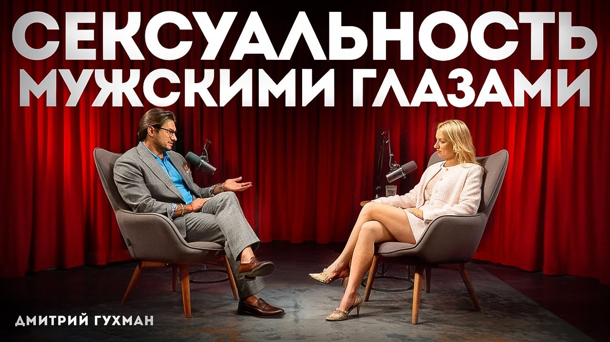

Интро, вердикт и скрытая повестка спикера
Тепловая карта выпуска (Хронометраж и плотность пользы)
| Таймкод | Тема смыслового акта | Плотность пользы | Прикладная ценность для анализа |
|---|---|---|---|
| 00:00 | Что на самом деле заводит мужчин | 🟡 Вода/Интро | Вводная концептуализация, разбор стереотипов о «серых мышках» |
| 01:15 | Сексуальность vs сексапильность | 🟢 Мясо | Деконструкция мифа 90-60-90: атрибуты против внутреннего состояния |
| 03:37 | Дружба с мужчиной: норма или угроза | 🟡 Вода | Разбор женских страхов растратить энергию |
| 04:30 | Дружба как главный афродизиак | 🟢 Мясо | Механика романтического либидо: пробуждение ответственности |
| 06:12 | Биохимия влюбленности и вред пластики | 🟢 Мясо | Гормональный коктейль (дофамин, окситоцин, тестостерон), маркер «свой-чужой» |
| 08:05 | Когда мужчина влюбляется по-настоящему | 🟢 Мясо | Служение через признание мужской силы и интеллекта |
| 09:25 | Синдром омерзения после секса (Post-coital Dysphoria) | 🟢 Мясо | Биологический откат дофамина и пролактиновый спад при отсутствии близости |
| 12:02 | Необходимость дружбы до первого секса | 🟡 Вода/Совет | Опасность попадания во френдзону vs построение доверия |
| 14:18 | Разница потребности в сексе у М и Ж | 🟢 Мясо | Автономность мужской эрекции от чувств vs женская потребность в безопасности |
| 15:25 | Мужская меркантильность и оценка статуса | 🟢 Мясо | Мужской аудит «стоимости владения»: инвестиции женщины в себя |
| 21:50 | Почему женщины не хотят слабых мужчин | 🟢 Мясо | Эволюционный фильтр силы: потеря влечения при инверсии ролей |
| 26:35 | Ранний аудит изменщика на этапе свиданий | 🟢 Мясо | Родовые сценарии, реакция на неверность отца, релятивизм морали |
| 29:03 | Причины мужских измен: половая конституция | 🟢 Мясо | Сильная/средняя/слабая конституция, разрядка vs поиск эмоций |
| 32:05 | Самый крепкий союз и комплекс Мадонны-Блудницы | 🟢 Мясо | Фрейдовское расщепление: почему любят одних, а хотят других |
| 35:05 | Как ходить на свидания при длительном воздержании | 🟡 Вода/Лайфхаки | Снятие завышенной значимости и сексуального голода |
| 39:40 | «Правило 30 дней»: сколько выдерживать дистанцию | 🟡 Спорно | Проверка инвестиционной готовности мужчины |
| 42:49 | Индикаторы мужской влюбленности | 🟢 Мясо | Взгляд, потеря контроля, готовность отдавать ресурсы без торга |
| 47:41 | Взрослая любовь vs дофаминовый угар | 🟢 Мясо | Переход от страсти к зрелому партнерству |
| 51:05 | Алгоритм формирования эмоциональной близости | 🟢 Мясо | Совместный контекст, регулярность качественного контакта, уязвимость |
Детальный разбор («МЯСО ВЫПУСКА»)
Фундаментальный тезис Гухмана: мужская сексуальность дуальна и функционирует на двух не пересекающихся уровнях: 1. Физиологическое либидо (Сексапильность / Механика): Работает на визуальных маркерах фертильности (симметрия, соотношение талии к бедрам, ухоженность, открытые сигналы тела). Его задача — чистая разрядка семенной жидкости. Оно не требует уважения, интереса или симпатии к личности женщины. Мужчина может заняться сексом с объектом, который презирает на когнитивном уровне. 2. Романтическое либидо (Сексуальность / Влюбленность): Включается исключительно через эмоциональную безопасность и дружбу. Женщина в романтическом либидо активирует в мужчине инстинкт покровительства, ответственности и инвестиций.
Бизнес-аналогия: Физиологическое либидо — это разовая спотовая сделка с минимальным LTV. Романтическое либидо — это стратегическое совместное предприятие с капитализацией в десятки лет.
Один из самых табуированных мужских феноменов: чувство тошноты, отторжения и желания мгновенно покинуть помещение после эякуляции. * Гормональный механизм: Во время полового акта мозг мужчины залит дофамином, блокирующим критическое мышление. В момент оргазма происходит резкий выброс пролактина и обвал дофамина ниже базовой линии. * Когнитивный диссонанс: Если между партнерами не было дружбы, уважения и эмоциональной связи, пролактиновый спад оставляет мужчину наедине с чужим человеком. Иллюзия привлекательности испаряется за 3 секунды, обнажая пустоту. Мужчина чувствует себя обманутым собственной физиологией. * Вывод: Секс до формирования дружбы — рулетка с 80% вероятностью посткоитального отторжения со стороны мужчины.
Гухман разрушает миф о мужском бескорыстии. Мужчины сканируют женщину прагматично: * Мужчина мгновенно считывает уровень инвестиций женщины в себя (качество кожи, зубов, волос, одежды, осанки). * Дело не в стоимости брендов, а в сигнале самоуважения. Женщина, экономящая на себе, подает невербальный сигнал: «Со мной можно обращаться дешево». * Успешный мужчина ищет партнершу, которая усиливает его статус, а не становится иждивенцем, требующим постоянного психологического обслуживания.
Психоаналитическое расщепление влечения по Фрейду у мужчин со средней половой конституцией: * После рождения детей муж начинает бессознательно проецировать на жену архетип Матери. Мать священна, ее нельзя желать грязно и порочно. * В результате сексуальное желание в браке блокируется чувством вины. Мужчина начинает любить жену как родственника, но сексуальные фантазии вытесняются наружу. * Решение: Женщине и мужчине критически важно сохранять ролевую гибкость — уметь выходить из роли «родителей» и переключаться в роли «соратников-любовников» вне домашней обстановки.
Сводка цифр, бенчмарков и развилок (A vs B)
| Метрика / Параметр | Значение в выпуске | Научная / Практическая интерпретация | Оценка реалистичности |
|---|---|---|---|
| «Правило дистанции» до секса | 30 дней | Оптимальный срок калибровки: мужчина успевает проявить характер, снять маску и включить романтическое либидо. | 🟢 Высокая (отсекает пикаперов) |
| Период дофаминового угара | 6 месяцев | Срок естественного угасания страсти («розовые очки разбиваются стеклами вовнутрь»). | 🟢 Подтверждено нейробиологией |
| Типы половой конституции | 3 типа | Сильная (ежедневно), Средняя (2–3 раза/нед), Слабая (1 раз в 10–14 дней). | 🟢 Сексологический стандарт |
| Доля измен не ради секса | ~80–90% | Измены мужчин со средней конституцией происходят из-за дефицита эмоционального признания или комплекса Мадонны. | 🟢 Высокая точность |
| Скорость включения защиты | Первые 3 свидания | Мужчина принимает решение об инвестициях в женщину за 3–4 встречи. | 🟡 Субъективно, но эмпирично |
| Сценарий A (Интуитивный / Ошибочный) | Сценарий B (Стратегический / Зрелый) | Риск сценария A | Преимущество сценария B |
|---|---|---|---|
| Быстрый секс на 1–2 свидании для «удержания» мужчины. | Формирование дружбы и контекста на протяжении 3–4 недель. | Посткоитальное отторжение (пролактиновый спад), статус «легкой добычи». | Активация романтического либидо, мужчина берет ответственность. |
| Тотальная роль «Хорошей матери» (готовка, контроль, опека). | Роль «Соратника и автономной личности» с личными границами. | Комплекс Мадонны: потеря сексуального влечения у мужа. | Сохранение сексуального напряжения и взаимного уважения. |
| Маскировка уязвимости под образ «холодной недоступной королевы». | Искренний диалог и принятие мужской слабости без осуждения. | Мужчина быстро устает от психологического штурма и уходит. | Мужчина обретает безопасную гавань и эмоциональную зависимость. |
Ментальные модели, карта мышления и Mermaid-диаграмма
flowchart TD
A["Интимная близость"] --> B["Оргазм и эякуляция"]
B --> C["Физиологический обвал дофамина + Пик Пролактина"]
C --> D{"Была ли сформирована дружба и доверие ДО секса?"}
D -- "НЕТ (Быстрый секс / Спонсорство)" --> E["Post-coital Dysphoria (Синдром омерзения)"]
E --> F["Ощущение обмана и пустоты"]
F --> G["Дистанцирование, игнор, слив отношений"]
D -- "ДА (Эмоциональная безопасность)" --> H["Выброс Окситоцина (Гормон привязанности)"]
H --> I["Включение Романтического Либидо"]
I --> J["Защита, ответственность, долгосрочные инвестиции"]
style A fill:#1e293b,stroke:#38bdf8,stroke-width:2px,color:#f8fafc
style E fill:#450a0a,stroke:#f87171,stroke-width:2px,color:#fca5a5
style J fill:#064e3b,stroke:#34d399,stroke-width:2px,color:#6ee7b7
Расширение кругозора: Книги, Словарь понятий и Персоны
Золотые формулировки и панчлайны выпуска
Внешний фактчек, материалы и реакция аудитории
Пошаговый 72-часовой план внедрения